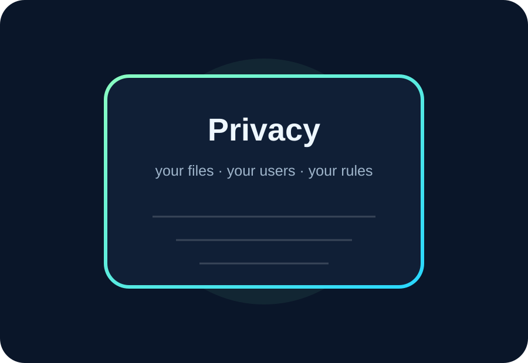
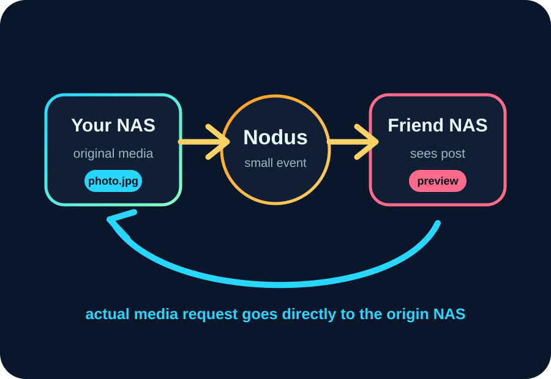

No ad-feed mission
The product direction is not to maximize scrolling time with opaque ranking systems.
DNA-Nexus is built around a different relationship: the user provides the storage, the server provides useful experiences, and the product should avoid unnecessary surveillance patterns.
DNA-Nexus is not just a file server. It is a way to enjoy cloud-like features while keeping important data under local, personal or community control.


Nodus connects the network. Your NAS serves your media.
With Nodus federation, DNA-Nexus servers can discover posts and connect with other servers. Federation events can carry metadata, previews and safe references, while the actual media is served from the origin DNA-Nexus NAS.
The product direction is not to maximize scrolling time with opaque ranking systems.
Users should understand what is shared, with whom, and through which link or workspace.
The NAS is the center. Cloud-like access is built around the owner’s own storage.
A lightweight roadmap helps visitors see this as a growing platform.